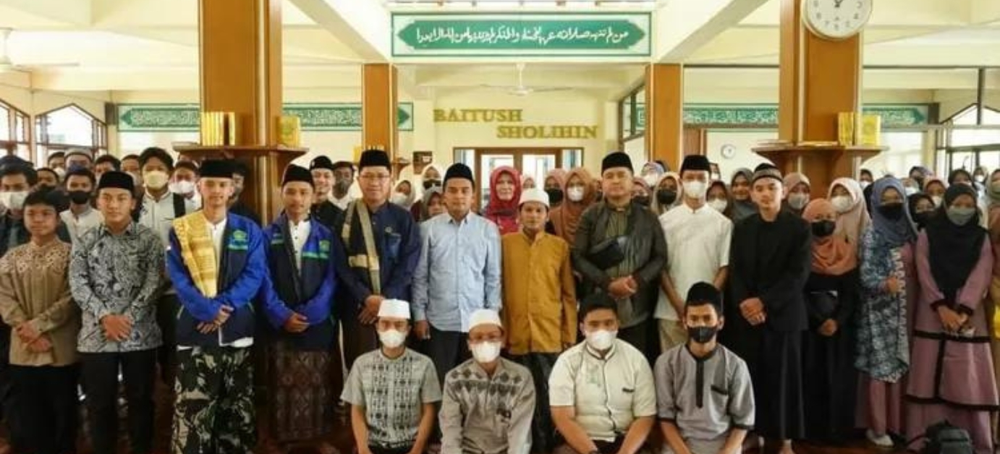
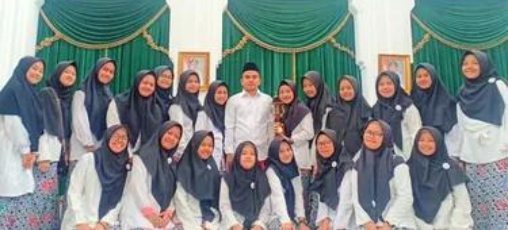
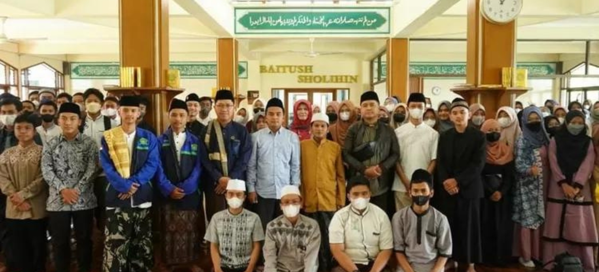
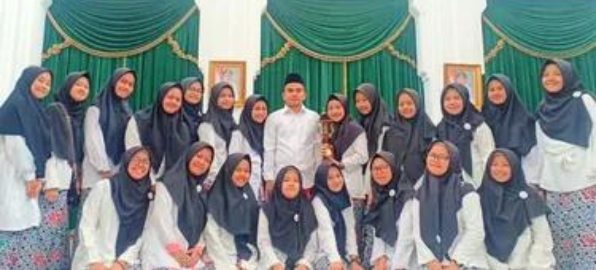

Sejarah IRMA Jawa Barat dan IRMA Baitussalam
 



Pengertian IRMA
Ikatan Remaja Masjid (IRMA) adalah sebuah organisasi keremajaan yang berfokus pada pendidikan karakter. IRMA merupakan organisasi yang tugas dan orientasi utamanya adalah berupaya mengembangkan nilai-nilai pendidikan karakter mulia. IRMA lahir pada tanggal 18 Desember 2017 di Kota Bandung oleh Bapak Rifa Anggyana S.Pd. dan diketuai oleh Ela Sopiani Rahayu dari MA Sinar Miskin Bandung.
Deretan Ketua IRMA Jawa Barat
- Ela Sopiani Rahayu, dari MA Sinar Miskin.
- Elsar Fatimatuz Zahra, dari MA Miftahul Falah.
- Zaenal Abidin, dari MA Al-Istiqamah Bandung.
- Aditiya Gustiana Saputra, dari SMA Kartika XIX 3 Bandung.
- Saepudin, dari SMAN 1 Jalancagak.
Visi, Misi, dan Tujuan IRMA
1. Visi
Menjadikan Ikatan Remaja Masjid yang profesional untuk mewujudkan masjid sekolah dan madrasah sebagai pusat ibadah dan pengembangan remaja masjid dalam meningkatkan keimanan, ketaqwaan, pendidikan, dan keterampilan.
2. Misi
- Merevitalisasi peran dan fungsi masjid sekolah dan madrasah.
- Meningkatkan kualitas ubudiyah umat sesuai faham Ahlussunnah Wal Jamaah melalui pengajian, halaqah, dan istighotsah.
- Memberdayakan jamaah masjid sekolah dan madrasah melalui pelatihan pemberdayaan ekonomi.
3. Tujuan
Terbinanya remaja masjid sekolah dan madrasah yang beriman, berilmu, dan beramal shalih dalam rangka mengabdi kepada Allah SWT dan mengharap keridhoan-Nya.
Sejarah IRMA Baitussalam SMAN 22 GARUT
Berdirinya IRMA Baitussalam di SMAN 22 Garut pada tanggal 14 Februari 2014 yang pada saat itu diketuai oleh kang Kurniawan.
Deretan Ketua IRMA Baitussalam
- Kurniawan (2014 - 2015)
- Zahrotul Qoir (2015 - 2016)
- Tanti Amelia Putri (2016 - 2017)
- Alfi Nurjaman (2017 - 2018)
- Widiyanti (2018 - 2019)
- Rosita Liana Risa (2019 - 2020)
- Heni Wulandari (2020 - 2021)
- Rahmi Agustin Syafa'at (2021 - 2022)
- Perdiyana (2022 - 2023)
Pada tanggal 14 Februari 2014, sebenarnya bukan Ikatan Remaja Masjid (IRMA) yang terbentuk, namun ROHIS yang terbentuk di SMAN 22 GARUT. Kepanjangan ROHIS adalah Rohani Islam.
Sumber: https://irmajabar.com/profil